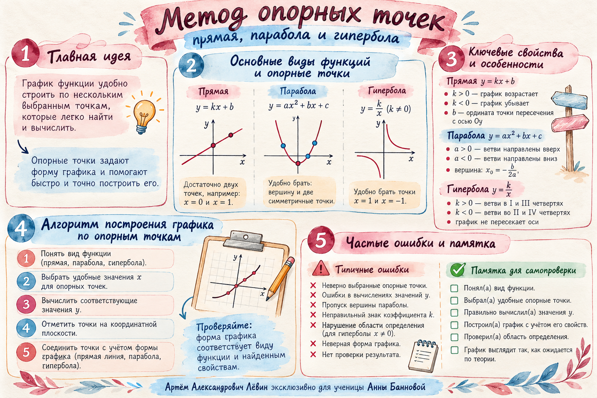

A(−1; −3) / B(3; 4)
Прямая
f(x) = kx + b
По двум точкам найдите коэффициенты, затем вычислите f(−5).
Показать ход решения
−3 = −k+b;
4 = 3k+b.
b=k−3 → 4=3k+(k−3).
4k=7 → k=7/4, b=−5/4.
f(−5)=−35/4−5/4=−10.
Проверка: f(−1)=−3; f(3)=4.
Прямая, парабола и гипербола выглядят по-разному. Когда известен вид функции и нужно восстановить два коэффициента, работа начинается одинаково: с двух удобных точек.
Опорная точка A(x; y) даёт уравнение y=f(x). Две точки с разными абсциссами позволяют найти два неизвестных коэффициента для рассматриваемых моделей.
Переключайте три примера с занятия. На графике отмечены именно те опорные точки, которые используются в решении. Значения и форма кривой согласованы с найденными формулами.
Точки A(−1; −3), B(3; 4). Каждая подстановка даёт уравнение для k и b.
По двум точкам ищем угловой коэффициент k и свободный член b.
−3 = −k + b; 4 = 3k + b.
f(x) = 7x/4 − 5/4
Контроль: полученная функция проходит через обе отмеченные точки.
Каждый пример повторяет схему «точки → система → коэффициенты». Раскройте промежуточные вычисления, чтобы восстановить метод самостоятельно.
f(x) = kx + b
По двум точкам найдите коэффициенты, затем вычислите f(−5).
−3 = −k+b;
4 = 3k+b.
b=k−3 → 4=3k+(k−3).
4k=7 → k=7/4, b=−5/4.
f(−5)=−35/4−5/4=−10.
Проверка: f(−1)=−3; f(3)=4.
f(x) = 2x² + bx + c
Старший коэффициент уже известен. Восстановите b и c.
−4=2·0²+b·0+c → c=−4.
1=2·1²+b·1−4 → b=3.
f(x)=2x²+3x−4.
Проверка: f(0)=−4; f(1)=1. Ветви направлены вверх.
f(x) = k/x + a, x ≠ 0
Упростите дроби в системе и восстановите k и a.
0=−k/3+a;
4=k+a.
a=4−k → 0=−k/3+4−k.
·3: 0=−k+12−3k → k=3.
a=1 → f(x)=3/x+1.
Проверка: f(−3)=0; f(1)=4; x=0 запрещён.
В этом методе самая сложная часть часто оказывается алгебраической: раскрыть скобки, аккуратно перенести знак и убрать знаменатель.
При переносе минуса из знаменателя меняется знак каждого слагаемого числителя.
Если вместо k подставляется выражение −4−2a, заключите его в скобки: −(−4−2a)=4+2a.
Дополнительный пример из занятия: для A(−2; −4), B(2; −2) в модели f(x)=k/x+a получается a=−3, k=2, то есть f(x)=2/x−3.
Конспект по разобранным примерам и иллюстрированная памятка. Тренировочного блока в пособии от 25.10.26 нет.
Возвращайтесь к схеме после решения новой задачи: прочитайте точки, составьте систему, восстановите функцию и выполните проверку.
